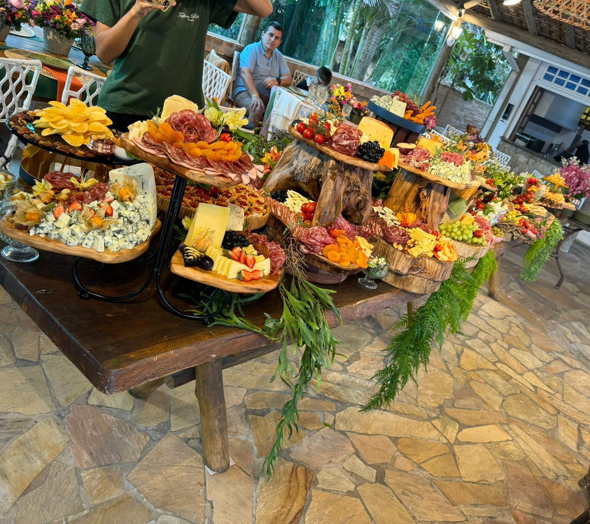
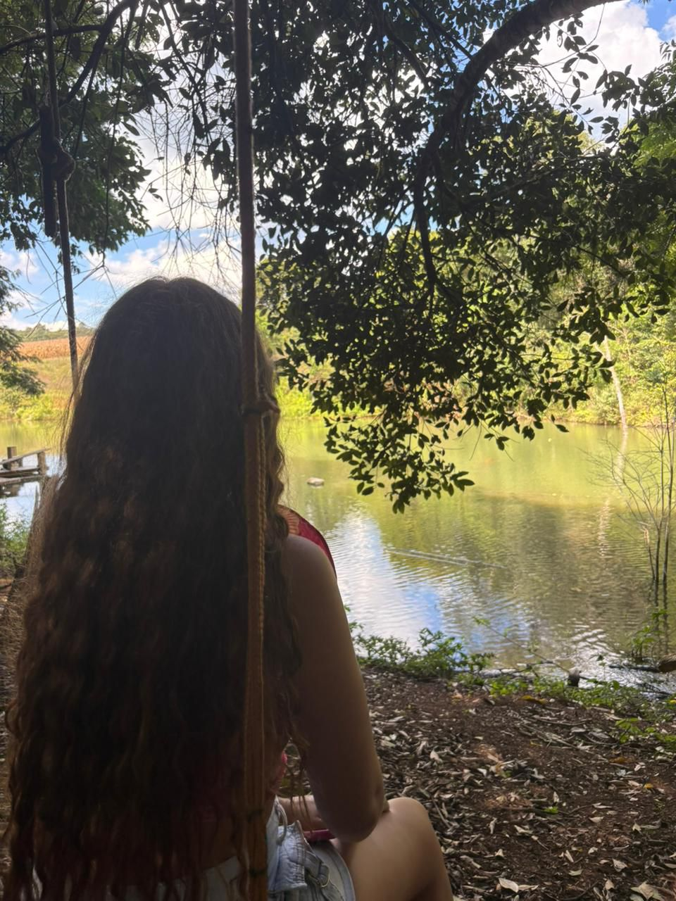
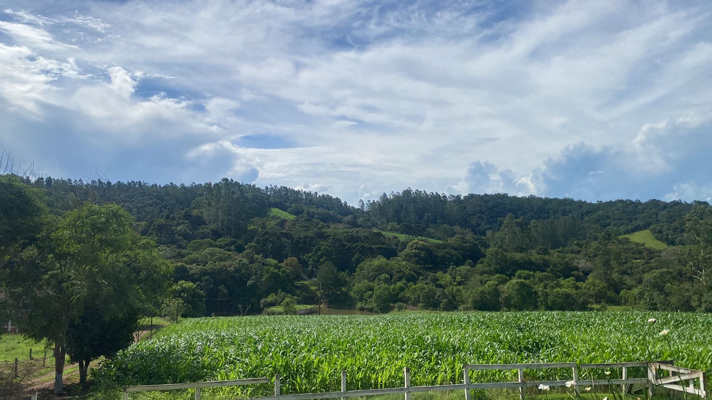
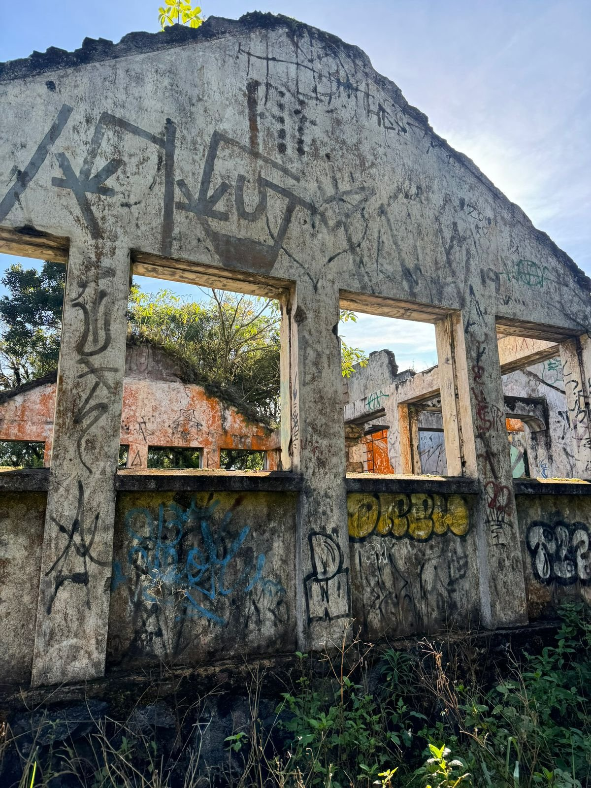
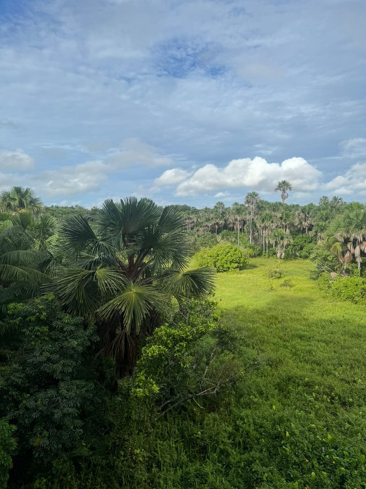

Cada escolha no campo hoje constrói o equilíbrio de amanhã.
Por que o pequeno produtor importa?
A agricultura familiar abastece mercados locais, fortalece a economia e pode liderar práticas sustentáveis com apoio técnico e planejamento.

Comida na mesa
Produção local que garante variedade e frescor para a população.

Vida no campo
Qualidade de vida, lazer e vínculo com a terra ajudam famílias a permanecer no rural com dignidade.

Produção sustentável
Cuida do solo, da água e da biodiversidade sem perder produtividade.
O futuro do campo: com e sem práticas sustentáveis
Compare dois caminhos possíveis: à esquerda, um futuro com práticas sustentáveis; à direita, situação de alerta. Arraste a seta na imagem para ver os dois lados.


Futuro sustentável Situação de alertaSua autoavaliação sustentável
Produtores avaliam a propriedade; quem mora na cidade olha para a rotina de hoje em casa e no consumo. Seja honesto: o objetivo é orientar, não julgar.
Escolha uma opção para começar:
Onde você está hoje?
Após marcar todas as áreas, veja pontuação, narrativa e gráfico (hoje x meta). Depois, vire os três cartões das prioridades.
Pontuação: --/100 · Situação: Aguardando suas notas
Revele seu resultado
Três flash-cards com as áreas que mais precisam de atenção, clique para ver nota e orientação.
Como sua terra pode ficar no futuro
Sugestões para você
Ideias para as áreas em que você marcou notas mais baixas, as mesmas prioridades dos cartões de resultado.
Escolha um perfil, preencha o formulário e revele os cartões do resultado para ver suas sugestões personalizadas.
Suas prioridades estão nos cartões acima. Revise as recomendações de cada área.
Agenda 2030 e os ODS
Marco da ONU: 1 de janeiro de 2030
0
dias
0
horas
0
min
0
seg
A Agenda 2030 da ONU reúne 17 Objetivos de Desenvolvimento Sustentável (ODS) , metas para equilibrar produção, consumo, renda e cuidado com o planeta até 2030 .
Nesta jornada, a autoavaliação no campo ou em casa (água, solo ou rotina doméstica, energia, resíduos e alimentos) dialoga com objetivos concretos. Em destaque: ODS 2 (alimentos), 6 (água), 7 (energia) e 12 (resíduos e consumo); no campo, também ODS 13 (clima) e 15 (solo e biodiversidade), com borda verde no painel abaixo.
O painel mostra as 17 metas. Toque ou passe o mouse para colorir o ícone; clique para fixar e ler como cada ODS se conecta ao agro, à cidade e às escolhas que você avaliou acima.
Painel das 17 ODS
Toque ou passe o mouse para ver o ícone colorido. Clique para fixar e ler a conexão com esta jornada.